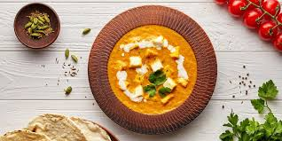
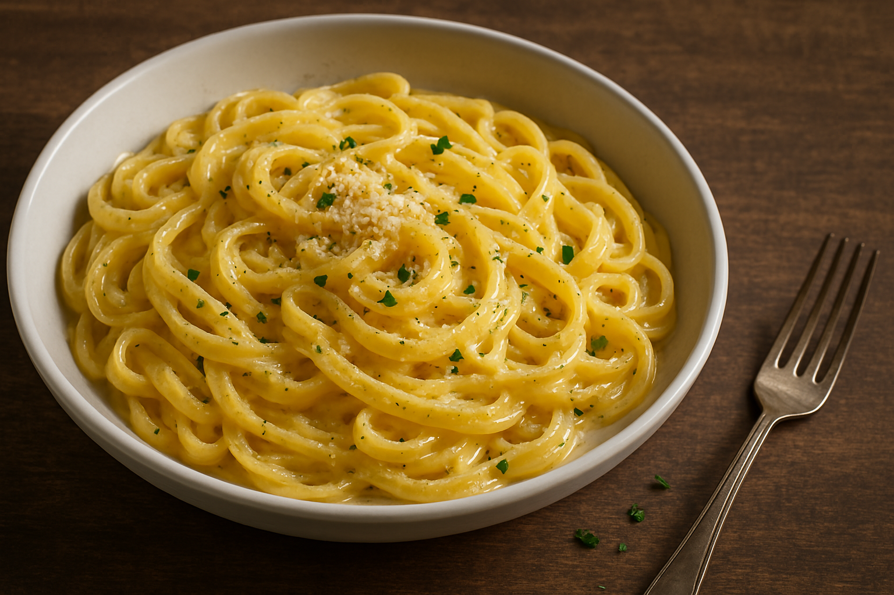

Our Chefs
| Chef | Specialties |
|---|---|
| Chef Mario | Italian |
| French | |
| Chef John | Chinese |
| Thai | |
| Japanese | |
| Chef Vikas | Indian |
| Mughlai |
| Chef | Specialties |
|---|---|
| Chef Mario | Italian |
| French | |
| Chef John | Chinese |
| Thai | |
| Japanese | |
| Chef Vikas | Indian |
| Mughlai |

Indulge in the creamy, velvety richness of Paneer Butter Masala, where succulent paneer cubes are drenched in a luscious tomato-butter gravy, bursting with aromatic spices. Every bite is a perfect harmony of tangy, sweet, and mildly spiced flavors, making it an irresistible treat for your taste buds!.

Savor the irresistible delight of our perfectly cooked pasta, tossed in a rich, velvety sauce infused with fresh herbs, garlic, and premium cheeses. Every bite is a symphony of flavors, bringing you the ultimate comfort in every forkful!.